Estamos a um passo de dar uma grande revolução no transporte público.

Apresentamos nosso inovador aplicativo que está prestes a transformar sua maneira de andar pela cidade.

Imagine embarcar em um ônibus sem a necessidade de uma carteirinha física.
Com o nosso app, você terá um passe de ônibus virtual na palma da sua mão.

Nossa tecnologia de ponta substituirá as antigas catracas por um leitor de QR code.
Basta mostrar seu código na catraca e você estará a bordo em segundos.